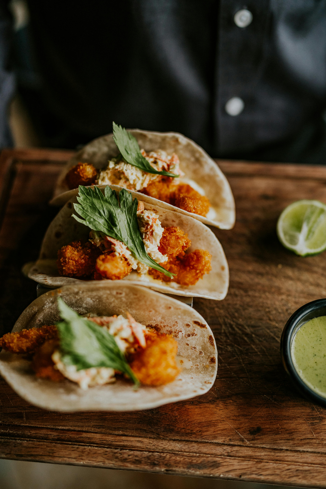

Main Page
Fish Tacos

Fish Tacos Recipe
Crispy, golden-brown fish fillets, wrapped in warm corn tortillas and topped with a delicious slaw made with shredded cabbage, red onion, and sour cream.
Serve a sprinkle of fresh cilantro. and lime juice
Ingredients
- 4 tilapia fillets
- 1/4 teaspoon cayenne pepper, ground
- 1/2 teaspoon garlic powder
- 1/2 teaspoon cumin
- 1/2 teaspoon salt
- teaspoon pepper
- 16 corn tortillas
Steps
- In a large bowl, combine green cabbage, red onion, sour cream, lime juice, and salt. Chill until ready to serve.
- In a bowl, mix cayenne, garlic powder, cumin, salt, and pepper. Season each tilapia fillet on both sides with the seasoning mix.
- Over medium-high heat, cook 2 fillets at a time for 8 minutes, flipping halfway. Repeat for the remaining fillets.
- Using a fork, break apart the fillets into bite-size pieces.
- Right before serving, heat the corn tortillas in the pan over high heat. Remove from the pan and assemble the tacos with the cabbage slaw and tilapia.
- Garnish with cilantro and lime juice
- Enjoy